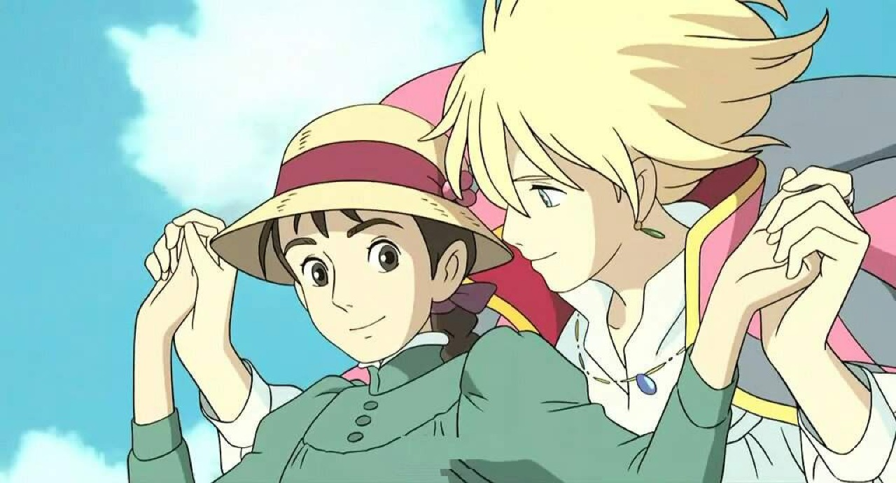

En el país de Ingary, donde existen cosas como las botas de siete leguas o las capas de invisibilidad, que una bruja te maldiga no es algo inusual. Cuando la Bruja del Páramo convierte a Sophie Hatter en una anciana, la joven abandona la sombrerería familiar para pedir ayuda en el único lugar mágico que se le ocurre: el castillo ambulante que atemoriza a los habitantes de Market Chipping. Pues dentro no sólo se halla un demonio del fuego, sino también el perverso mago Howl, tan diestro en realizar hechizos como en robar los corazones de las damas.

Sophie es la mayor de tres hermanas y bien es sabido que, como tal, es la que menos esperanzas tiene de futuro. Resignada a su destino, un día tiene la mala suerte de recibir la visita de la malvada Bruja del Páramo que, sin más, la hechiza y la convierte en una anciana de noventa años. Como su vida ya no podía ir a más, según ella, afronta su nueva situación con naturalidad y, con la esperanza de conseguir fortuna, acaba en la casa del mago Howl: el castillo ambulante.
Y dentro de ese mágico castillo, donde según qué color elijas para abrir la puerta acabas en un lado u otro, se desarrollará esta magnífica historia de fantasía, disparatada en ocasiones y enrevesada en otras. Conoceremos a personajes entrañables como Calcifer, el demonio de fuego; Michael, el joven aprendiz enamorado; y, por supuesto, al propio Howl, un mago cobarde e infantil, al que, al parecer, lo único que le importa es conquistar chicas y enrabietarse cuando no consigue lo que quiere.Con un tono lleno de humor y una narración desentendida, «El castillo ambulante» difiere por completo de su versión cinematográfica del Estudio Ghibli. Mientras que la película se centra sobre todo en la parte dura y cruel de la guerra, en el libro sucede todo lo contrario, llegando a ignorar este hecho para centrarse en la relación entre los personajes, a veces hilarante, y su evolución sutil. Es más, al final del libro se incluye una entrevista con la autora, Diana Wynne Jones, donde habla sobre las impresiones que tuvo al conocer los puntos de vista tan diferentes entre su obra y la película. En esta novela encontraréis mucha magia, muchas casualidades, y un final de cuento de hadas.